Optimization of sampling strata with the SamplingStrata package
Marco Ballin, Giulio Barcaroli
2020-10-15
Source:vignettes/SamplingStrata.Rmd
SamplingStrata.RmdIntroduction
Let us suppose we need to design a sample survey, having a complete frame containing information on the target population (identifiers plus auxiliary information). If our sample design is a stratified one, we need to choose how to form strata in the population, in order to get the maximum advantage by the available auxiliary information. In other words, we have to decide in which way to combine the values of the auxiliary variables (from now on, the ‘X’ variables) in order to determine a new variable, called ‘stratum’. To do so, we have to take into consideration the target variables of our sample survey (from now on, the ‘Y’ variables): if, to form strata, we choose the X variables most correlated to the Y’s, the efficiency of the samples drawn by the resulting stratified frame may be greatly increased. Every combination of values of each active variable determines a particular stratification of the target population, i.e. a possible solution to the problem of ‘best’ stratification. Here, by best stratification, we mean the stratification that ensures the minimum sample cost, sufficient to satisfy precision constraints set on the accuracy of the estimates of the survey target variables Y’s (constraints expressed as maximum allowable coefficients of variation in the different domains of interest). When the cost of data collection is uniform over the strata, then the total cost is directly proportional to the overall sample size, and the convenience of a particular stratification can be measured by the associated size of the sample, whose estimates are expected to satisfy given accuracy levels. This minimum size can be determined by applying the Bethel algorithm, with its Chromy variant (Bethel (1989)). In general, the number of possible alternative stratifications for a given population may be very high, depending on the number of variables and on the number of their values, and in these cases it is not possible to enumerate them in order to assess the best one. A very convenient solution to this is the adoption of the evolutionary approach, consisting in applying a genetic algorithm that may converge towards a near-optimal solution after a finite number of iterations. The methodology is fully described in Ballin and Barcaroli (2013), and a complete illustration of the package, together with a comparison with the stratification package (Baillargeon and Rivest (2014)), is in Barcaroli (2014). Also a complete application in a case of network data is reported in Ballin and Barcaroli (2016). The implementation of the genetic algorithm is based on a modification of the functions in the genalg package (see Willighagen 2005). In particular, the crossover operator has been modified on the basis of the indications given by O’Luing, Prestwich, and Tarim (2019).
Two more issues, not contained in this vignette, namely:
- the use of models to take into account the anticipated variance of target variables not directly available in the sampling frame,
- the use of SamplingStrata to handle spatial sampling, i.e. to optimize the stratification of geo-coded sampling frames,
are the object of two dedicated vignettes in the section “Articles” in the website: https://barcaroli.github.io/SamplingStrata/ .
Procedural steps
The optimization of the sampling design starts by making the sampling frame available, defining the target estimates of the survey and establishing the precision constraints on them. Then, a choice has to be made with regard to what stratification variables to choose among those available in the frame, on the basis of an analysis of the correlation existing between the two sets of variables (stratification and target). When the chosen stratification variables are both categorical and continuous, in order to make them homogeneuous the continuous ones should be categorized (by using for instance a clustering k-means algorithm). Then, the optimization step making use of the ‘atomic’ method can be executed. If, conversely, the stratification variables are all of the continuous type the optimization step can be directly executed by making use of the method ‘continuous’. It is also possible to perform both kinds of optimization, compare the results and choose the more convenient.
Prior to the optimization based on the use of the genetic algorithm, it is advisable to run a different quick optimization task based on the use of the k-means algorithm, with a twofold purpose:
- give a hint on a suitable number of final strata;
- get an initial ‘good’ solution to be given as a ‘suggestion’ to the genetic algorithm in order to speed its convergence to the final solution.
In the optimization step it is possilble to indicate the set of sampling units that must be selected in any case (‘take-all’ strata). After the optimization, it is possible to evaluate the quality of the solution by simulating the selection of a high number of samples from the frame, and calculating sampling variance and bias for all the target variables. It is also possible to ‘adjust’ the sample size of the optimized solution on the basis of the available budget: if a higher size is allowable, sampling rates in strata are increased proportionally until the new total sample size is reached; the opposite is done in case we are obliged to reduce the sample size.
Finally, we proceed with the selection of the sample.
In the following, each step will be illustrated starting from a real sampling frame, the one that comes with the R package sampling (the dataframe swissmunicipalities).
Preparation of inputs required by the optimization step
Frame
For sake of simplicity, let us consider a subset of the swissmunicipalities dataset:
library(SamplingStrata) data(swissmunicipalities) swissmun <- swissmunicipalities[swissmunicipalities$REG < 4, c("REG","COM","Nom","HApoly", "Surfacesbois","Surfacescult", "Airbat","POPTOT")] head(swissmun) #> REG COM Nom HApoly Surfacesbois Surfacescult Airbat POPTOT #> 2 1 6621 Geneve 1593 67 31 773 177964 #> 3 3 2701 Basel 2391 97 93 1023 166558 #> 4 2 351 Bern 5162 1726 1041 1070 128634 #> 5 1 5586 Lausanne 4136 1635 714 856 124914 #> 9 2 371 Biel (BE) 2123 976 196 463 48655 #> 10 2 942 Thun 2158 425 694 523 40377
In order to limit the processing time we have selected only the first 3 regions and only the variables of interest for our example. Each row in this dataset contains information on a swiss municipalities, identified by COM and Nom, and belonging to one of three selected regions (REG).
Suppose we want to plan a sampling survey where the target estimates Ys are the totals of woods area (Surfacesbois) and buildings area (Airbat) for each of the 3 regions (domains of interest). Suppose also that in each municipalities are always updated the values of total area (HApoly) and total population (POPTOT). From the correlation matrix:
cor(swissmun[,c(4:8)]) #> HApoly Surfacesbois Surfacescult Airbat POPTOT #> HApoly 1.00000000 0.76920101 0.3398758 0.2602289 0.09940795 #> Surfacesbois 0.76920101 1.00000000 0.4492188 0.2968918 0.09881328 #> Surfacescult 0.33987579 0.44921881 1.0000000 0.3230496 0.11451750 #> Airbat 0.26022890 0.29689183 0.3230496 1.0000000 0.86896631 #> POPTOT 0.09940795 0.09881328 0.1145175 0.8689663 1.00000000
we see that the correlations between Surfacesbois and HApoly, from one side, and between Airbat and POPTOT from the other side, are high (respectively 0.77 and 0.87), so we decide that both HApoly and POPTOT play the role of stratification variables Xs in our frame.
In a first moment we decide to treat the stratification variables as categorical, so we have to categorize them. A suitable way to do so, is to apply a k-means clustering method (see Hartigan and Wong 1979) by using the function var.bin:
swissmun$HApoly.cat <- var.bin(swissmun$HApoly,15) table(swissmun$HApoly.cat) #> #> 1 2 3 4 5 6 7 8 9 10 11 12 13 14 15 #> 311 345 281 214 158 126 111 84 66 32 29 32 15 11 8 swissmun$POPTOT.cat <- var.bin(swissmun$POPTOT,15) table(swissmun$POPTOT.cat) #> #> 1 2 3 4 5 6 7 8 9 10 11 12 13 14 15 #> 452 388 266 193 124 109 79 59 42 33 35 28 5 6 4
We can now define the frame dataframe in the format required by SamplingStrata. Function buildFrameDF permits to organize data in a suitable mode for next processing:
frame1 <- buildFrameDF(df = swissmun, id = "COM", X = c("POPTOT.cat","HApoly.cat"), Y = c("Airbat","Surfacesbois"), domainvalue = "REG") head(frame1) #> id X1 X2 Y1 Y2 domainvalue #> 1 6621 15 8 773 67 1 #> 2 2701 15 9 1023 97 3 #> 3 351 15 12 1070 1726 2 #> 4 5586 15 11 856 1635 1 #> 5 371 14 9 463 976 2 #> 6 942 14 9 523 425 2
Strata
This dataframe is not explicitly required, as it is automatically produced from the frame dataframe by the optimStrata function. Norwithstanding, it is worth while to produce it in order to analyse the initial stratification of the frame, and what could be the associated sample size without optimization. The function buildStrataDF is the one to produce the strata dataframe:
strata1 <- buildStrataDF(frame1, progress=F) #> #> Computations are being done on population data #> #> Number of strata: 350 #> ... of which with only one unit: 130 head(strata1) #> STRATO N M1 M2 S1 S2 COST CENS DOM1 X1 X2 #> 1*1 1*1 64 5.359375 34.07812 2.846968 24.54161 1 0 1 1 1 #> 1*10 1*10 3 17.333333 858.66667 13.299958 264.73928 1 0 1 1 10 #> 1*11 1*11 3 9.666667 842.00000 1.699673 349.82567 1 0 1 1 11 #> 1*12 1*12 1 9.000000 1100.00000 0.000000 0.00000 1 0 1 1 12 #> 1*13 1*13 5 12.200000 1085.40000 3.187475 537.57924 1 0 1 1 13 #> 1*15 1*15 1 10.000000 387.00000 0.000000 0.00000 1 0 1 1 15
Each row in this dataframe report information related to a given stratum (obtained by cross-classifying each unit with the values of the X variables) regarding:
- the identifier of the stratum (named ‘strato’), concatenation of the values of the X variables;
- the values of the m auxiliary variables (named from X1 to Xm) corresponding to those in the frame;
- the total number of units in the population (named ‘N’);
- a flag (named ‘cens’) indicating if the stratum is to be censused (=1) or sampled (=0);
- a variable indicating the cost of interviewing per unit in the stratum (named ‘cost’);
- for each target variable y, its mean and standard deviation, named respectively ‘Mi’ and ‘Si’);
- the value of the domain of interest to which the stratum belongs (‘DOM1’).
Precision constraints
The errors dataframe contains the accuracy constraints that are set on target estimates. This means to define a maximum coefficient of variation for each target variable and for each domain value. Each row of this frame is related to accuracy constraints in a particular subdomain of interest, identified by the domainvalue value. In our case, we have chosen to define the following constraints:
ndom <- length(unique(swissmun$REG)) cv <- as.data.frame(list(DOM=rep("DOM1",ndom), CV1=rep(0.10,ndom), CV2=rep(0.10,ndom), domainvalue=c(1:ndom) )) cv #> DOM CV1 CV2 domainvalue #> 1 DOM1 0.1 0.1 1 #> 2 DOM1 0.1 0.1 2 #> 3 DOM1 0.1 0.1 3
This example reports accuracy constraints (maximum CV allowable equal to 10%) on variables Y1 and Y2 that are the same for all the 3 different subdomains (Swiss regions) of domain level DOM1. Of course we can differentiate the precision constraints region by region. It is important to underline that the values of ‘domainvalue’ are the same than those in the frame dataframe, and correspond to the values of variable ‘DOM1’ in the strata dataframe.
We check that the dataframes that we have defined so far are correct:
checkInput(errors = checkInput(errors = cv, strata = strata1, sampframe = frame1)) #> #> Input data have been checked and are compliant with requirements
For instance, this function controls that the number of auxiliary variables is the same in the frame and in the strata dataframes; that the number of target variables indicated in the frame dataframe is the same than the number of means and standard deviations in the strata dataframe, and the same than the number of coefficient of variations indicated in the errors dataframe.
So far so good. Now we want to determine the total sample size, and related allocation, under the given strata, using the function bethel (Bethel (1989)):
This is the total sample size (570) required to satisfy precision constraints under the current stratification, before the optimization.
Optimization
The function optimStrata is the one performing the optimization step. Actually, this function is a ‘wrapper’ that calls three different optimization functions:
- optimizeStrata (method = atomic, if stratification variables are categorical, or reduced to categorical);
- optimizeStrata2 (method = continuous, if stratification variables are continuous);
- optimizeStrataSpatial (method = spatial, if stratification variables are continuous and there is spatial correlation among units in a geo-coded sampling frame).
For continuity reasons, these functions are still available to be used standalone, and in some situations it may be useful to use them by a direct call (see related help for details).
Here we report the most important parameters related to the three methods (for the others see the help):
| Parameter | Description |
|---|---|
| framesamp | The name of the dataframe containing the information related to the |
| sampling frame. | |
| framecens | The name of the dataframe containing the units to be selected in any case. |
| It has same structure than “framesamp” dataframe. | |
| nStrata | The number of final optimized strata to be obtained. |
| model | In case the Y variables are not directly observed, but are estimated by |
| means of other explicative variables, in order to compute the anticipated | |
| variance, information on models are given by a dataframe “model” with as | |
| many rows as the target variables. Default is NULL. | |
| errors | The dataframe containing the precision levels expressed in |
| terms of maximum allowable coefficient of variation on a given estimate. | |
| minnumstr | Minimum number of units that must be allocated in each stratum |
| (default is 2). | |
| iter | Maximum number of iterations (= generations) of the genetic algorithm |
| (default is 50). | |
| pops | The dimension of each generations in terms of individuals (default is 20). |
| suggestions | Optional parameter for genetic algorithm that indicates a suggested solution |
| to be introduced in the initial population. The most convenient is the | |
| one found by the function “KmeanSolution” (default is NULL). |
Method ‘atomic’
As a first run we execute the optimization step using the method atomic (required as the stratification variables are of the categorical type).
set.seed(1234) solution1 <- optimStrata(method = "atomic", errors = cv, nStrata = rep(10,ndom), framesamp = frame1, iter = 50, pops = 10) #> #> Input data have been checked and are compliant with requirements #> #> Computations are being done on population data #> #> Number of strata: 350 #> ... of which with only one unit: 130 #> *** Starting parallel optimization for 3 domains using 3 cores
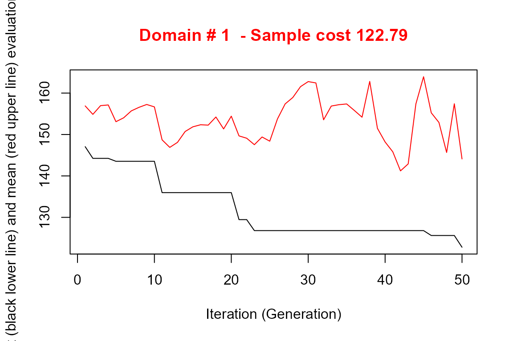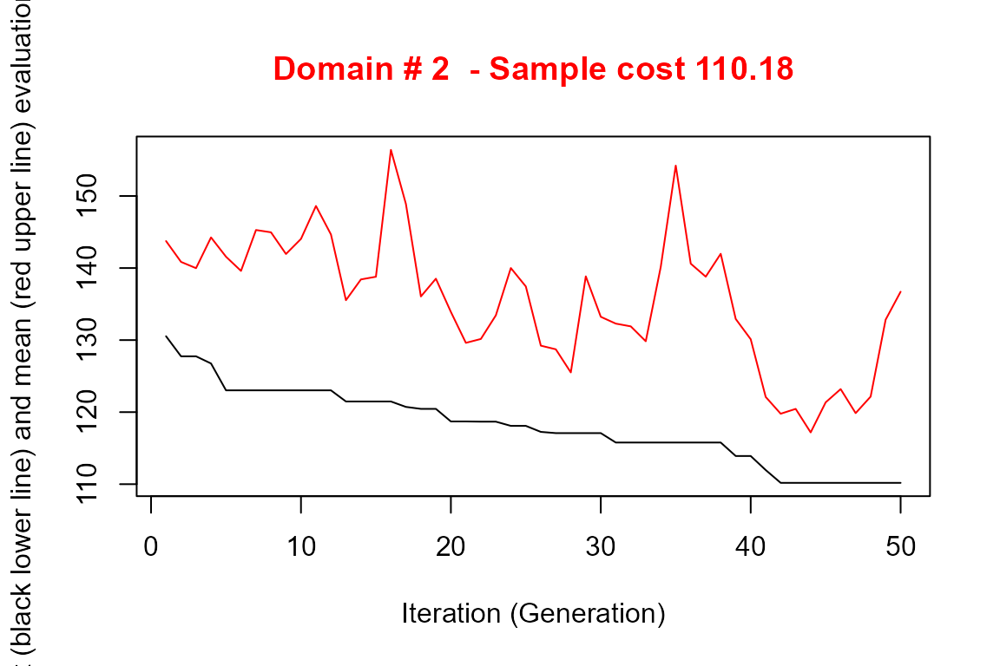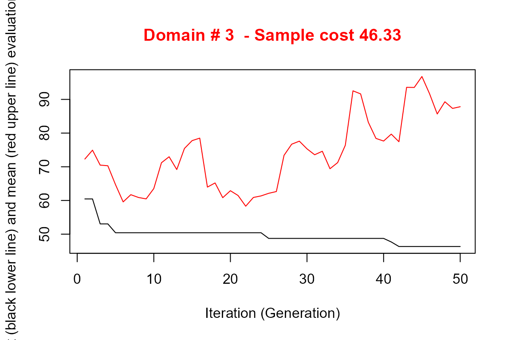
#>
#> *** Sample size : 289
#> *** Number of strata : 23
#> ---------------------------The execution of optimStrata produces the solution of 3 different optimization problems, one for each domain. The graphs illustrate the convergence of the solution to the final one starting from the initial one (i.e. the one related to the atomic strata). Along the x-axis are reported the executed iterations, from 1 to the maximum, while on the y-axis are reported the size of the sample required to satisfy precision constraints. The upper (red) line represent the average sample size in each iteration, while the lower (black) line represents the best solution found until the i-th iteration.
We can calculate (analytically) the expected CVs by executing the function:
expected_CV(solution1$aggr_strata) #> cv(Y1) cv(Y2) #> DOM1 0.100 0.099 #> DOM2 0.100 0.100 #> DOM3 0.099 0.100
The obtained total size of the sample required to satisfy precision constraint is much lower than the one obtained with the simple application of the Bethel algorithm to the initial atomic stratification, but maybe not yet satisfactory.
In order to explore other solutions we may want that each unit in the sampling frame be considered as an atomic stratum, and let to the optimization step to aggregate them on the basis of the values of the Y variables. In any case, as we have to indicate at least one X variable, we can use to this purpose a simple progressive number:
swissmun$progr <- c(1:nrow(swissmun)) frame2 <- buildFrameDF(df = swissmun, id = "COM", X = "progr", Y = c("Airbat","Surfacesbois"), domainvalue = "REG") head(frame2) #> id X1 Y1 Y2 domainvalue #> 1 6621 1 773 67 1 #> 2 2701 2 1023 97 3 #> 3 351 3 1070 1726 2 #> 4 5586 4 856 1635 1 #> 5 371 5 463 976 2 #> 6 942 6 523 425 2
We can use this approach because the number of units in the frame is small: it would not be possible to consider each unit as a stratum in case of real population registers or even with business registers.
Even so, the processing of the 1,823 strata may be slow.
In order to speed up the convergence towards the optimal solution, an initial one can be given as a “suggestion” to ‘optimizeStrata’ function. The function KmeansSolution produces this initial solution by clustering atomic strata considering the values of the means of all the target variables Y. For any given number of clusters, the correspondent aggregation of atomic strata is considered as input to the function bethel. The number of clusters for which the value of the sample size necessary to fulfil precision constraints is the minimum one, is retained as the optimal one. Also, the optimal number of clusters is determined inside each domain. It is possible to indicate a maximum number of aggregated strata to be obtained by using the parameter maxcluster:
strata2 <- buildStrataDF(frame2, progress=F) initial_solution2 <- KmeansSolution(strata = strata2, errors = cv, maxclusters = 10)
The overall solution is obtained by concatenating optimal clusters obtained in domains. The result is a dataframe with two columns: the first indicates the clusters, the second the domains. On the basis of these, we can calculate the most convenient number of final strata for each domain:
nstrata2 <- tapply(initial_solution2$suggestions, initial_solution2$domainvalue, FUN=function(x) length(unique(x))) nstrata2 #> 1 2 3 #> 10 8 10
and we can supply both the initial_solution and the number of strata nstrata as inputs to the optimization step:
set.seed(1234) solution2 <- optimStrata(method = "atomic", errors = cv, framesamp = frame2, iter = 50, pops = 10, nStrata = nstrata2, suggestions = initial_solution2) #> #> Input data have been checked and are compliant with requirements #> #> Computations are being done on population data #> #> Number of strata: 1823 #> ... of which with only one unit: 1823 #> *** Starting parallel optimization for 3 domains using 3 cores
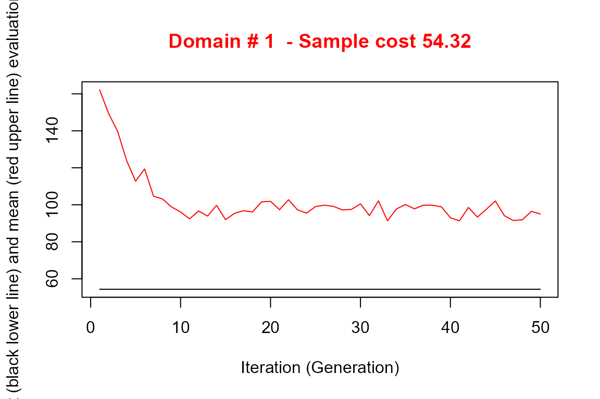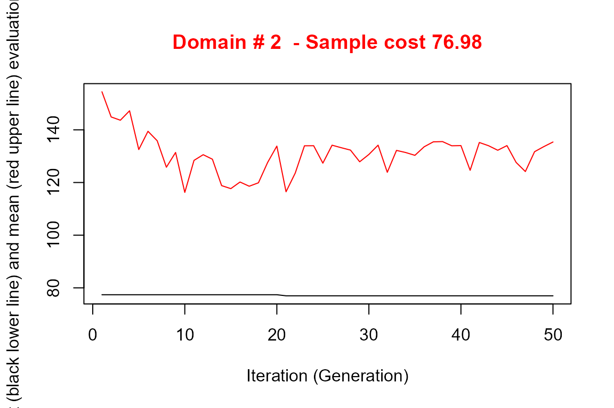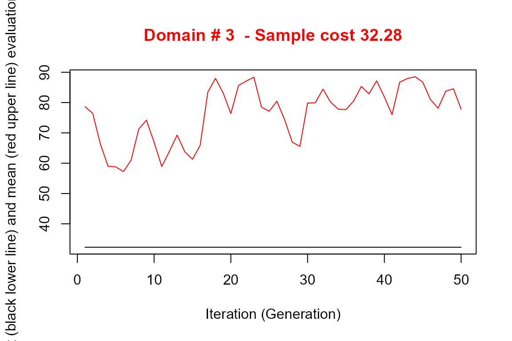
#>
#> *** Sample size : 163
#> *** Number of strata : 27
#> ---------------------------Notice that the obtained solution in this run in terms of sample size (390) is significantly better than in the previous one.
outstrata2 <- solution2$aggr_strata expected_CV(outstrata2) #> cv(Y1) cv(Y2) #> DOM1 0.099 0.046 #> DOM2 0.100 0.024 #> DOM3 0.098 0.023
Method ‘continuous’
The last thing to do is to test also the continuous method.
First, we have to redefine the frame dataframe in this way:
frame3 <- buildFrameDF(df = swissmun, id = "COM", X = c("POPTOT","HApoly"), Y = c("Airbat","Surfacesbois"), domainvalue = "REG") head(frame3) #> id X1 X2 Y1 Y2 domainvalue #> 1 6621 177964 1593 773 67 1 #> 2 2701 166558 2391 1023 97 3 #> 3 351 128634 5162 1070 1726 2 #> 4 5586 124914 4136 856 1635 1 #> 5 371 48655 2123 463 976 2 #> 6 942 40377 2158 523 425 2
Also in this case we want to produce an initial solution:
set.seed(1234) init_sol3 <- KmeansSolution2(frame=frame3, errors=cv, maxclusters = 10)


nstrata3 <- tapply(init_sol3$suggestions, init_sol3$domainvalue, FUN=function(x) length(unique(x))) nstrata3 # 1 2 3 # 10 10 9
initial_solution3 <- prepareSuggestion(init_sol3,frame3,nstrata3) #> #> Computations are being done on population data #> #> Number of strata: 29 #> ... of which with only one unit: 3
Note that this time we call a different function (KmeansSolution2) that requires, instead of the strata dataframe, directly the frame dataframe. Moreover, we need an intermediate step to prepare the suggestion for the optimization, that is the execution of the function prepareSuggestion.
We are now able to perform the optimization step with the continuous method:
set.seed(1234) solution3 <- optimStrata(method = "continuous", errors = cv, framesamp = frame3, iter = 50, pops = 10, nStrata = nstrata3, suggestions = initial_solution3) #> #> Input data have been checked and are compliant with requirements #> #> *** Starting parallel optimization for 3 domains using 3 cores
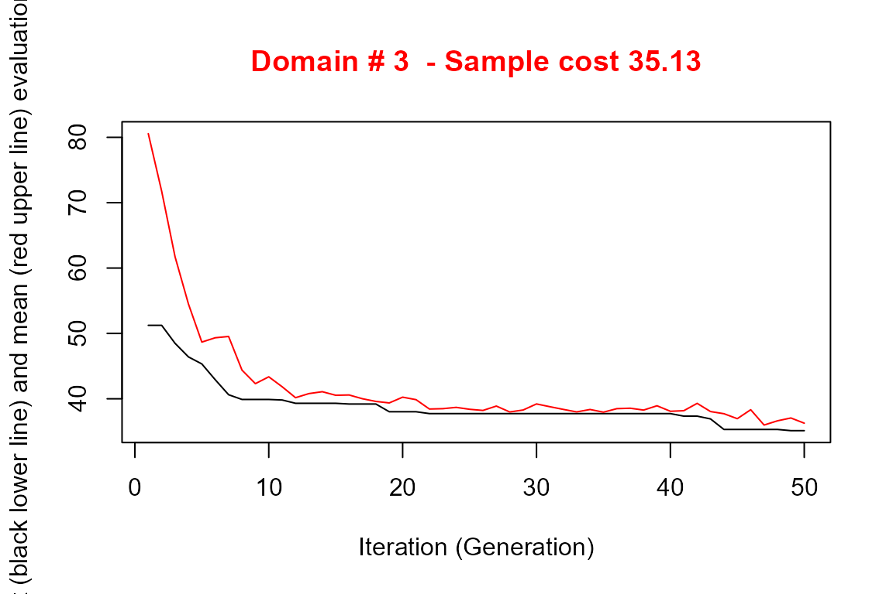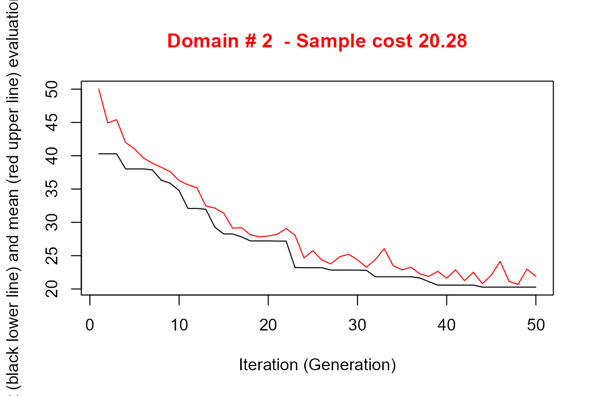
#>
#> *** Sample size : 94
#> *** Number of strata : 25
#> ---------------------------This solution requires a total sample size that is by far the best among those we produced, so we decide to select this one.
Analysis of the obtained solution
Strata structure
The results of the execution are contained in the list ‘solution’, composed by three elements:
- solution$indices: the vector of the indices that indicates to what aggregated stratum each atomic stratum belongs (if the atomic method has been used) or to which aggregated stratum each unit in the frame belongs (in case the continuous method has been used);
- solution$framenew: the initial frame updated with the indication, for each unit, of the optimal strata to which each unit belongs;
- solution$aggr_strata: the dataframe containing information on the optimized strata.
When stratification variables are of the continuous type, and the continuous (or spatial) method has been used, it is possible to have detailed information on the structure of the optimized strata, for instance by using the function summaryStrata:
strataStructure <- summaryStrata(solution3$framenew, solution3$aggr_strata, progress=FALSE) head(strataStructure) #> Domain Stratum Population Allocation SamplingRate Lower_X1 Upper_X1 Lower_X2 Upper_X2 #> 1 1 1 201 3 0.015392 27 847 32 481 #> 2 1 2 130 4 0.032375 33 1597 48 1004 #> 3 1 3 76 6 0.072937 99 6344 107 1223 #> 4 1 4 84 8 0.092266 95 7516 129 2792 #> 5 1 5 34 5 0.138115 130 8270 436 4855 #> 6 1 6 15 3 0.230649 155 8892 650 6723
For each otpimized stratum, total number of units together with allocations and sampling rates are reported. Also ranges of the stratification variables are listed, in order to characterize the strata.
If the stratification variables are in a limited number, as in our case, it is possible to use the plotStrata2d function, that allows also to visualize strata by choosing couples of variables and one domain per time:
plotStrata2d(solution3$framenew, solution3$aggr_strata, domain = 3, vars = c("X1","X2"), labels = c("Total Population","Total Area"))
| Stratum | Population | Allocation | SamplingRate | Bounds Total Population | Bounds Total Area |
|---|---|---|---|---|---|
| 1 | 127 | 4 | 0.02882378 | 109-2443 | 32-481 |
| 2 | 93 | 4 | 0.04365108 | 235-3128 | 211-964 |
| 3 | 20 | 2 | 0.10000000 | 744-3770 | 261-1019 |
| 4 | 43 | 3 | 0.07819533 | 692-9735 | 299-1106 |
| 5 | 15 | 3 | 0.18519574 | 566-20370 | 252-1137 |
| 6 | 14 | 2 | 0.14285714 | 721-16270 | 1177-1418 |
| 7 | 8 | 2 | 0.25000000 | 929-16654 | 1569-2029 |
| 8 | 1 | 1 | 1.00000000 | 166558-166558 | 2391-2391 |
Evaluation by simulation
In order to be confident about the quality of the found solution, the function evalSolution allows to run a simulation, based on the selection of a desired number of samples from the frame to which the stratification, identified as the best, has been applied. The user can invoke this function also indicating the number of samples to be drawn:
eval3 <- evalSolution(frame = solution3$framenew, outstrata = solution3$aggr_strata, nsampl = 200, progress = FALSE)
For each drawn sample, the estimates related to the Y’s are calculated. Their mean and standard deviation are also computed, in order to produce the CV and relative bias related to each variable in every domain.
eval3$coeff_var #> CV1 CV2 dom #> 1 0.0980 0.0920 DOM1 #> 2 0.0961 0.0992 DOM2 #> 3 0.1018 0.0963 DOM3 eval3$rel_bias #> y1 y2 dom #> 1 0.0067 0.0008 DOM1 #> 2 -0.0067 0.0042 DOM2 #> 3 0.0024 0.0054 DOM3
It is also possible to analyse the sampling distribution of the estimates for each variable of interest in a selected domain:
dom = 1 hist(eval3$est$Y1[eval3$est$dom == dom], col = "grey", border = "white", xlab = expression(hat(Y)[1]), freq = FALSE, main = paste("Variable Y1 Domain ",dom,sep="")) abline(v = mean(eval3$est$Y1[eval3$est$dom == dom]), col = "blue", lwd = 2) abline(v = mean(frame3$Y1[frame3$domainvalue==dom]), col = "red") legend("topright", c("distribution mean", "true value"), lty = 1, col = c("blue", "red"), box.col = NA, cex = 0.8)

Adjustment of the final sampling size
After the optimization step, the final sample size is the result of the allocation of units in final strata. This allocation is such that the precision constraints are expected to be satisfied. Actually, three possible situations may occur:
- the resulting sample size is acceptable;
- the resulting sample size is too high, i.e. it is not affordable with respect to the available budget;
- the resulting sample size is too low, the available budget permits to increase the number of units.
In the first case, no action is required. In the second case, it is necessary to reduce the number of units, by equally applying the same reduction rate in each stratum. In the third case, we proceed to increase the sample size by applying the same increase rate in each stratum. This increase/reduction process is iterative, as by applying the same rate we could find that in some strata there are not enough units to increase or to reduce. The function adjustSize permits to obtain the desired final sample size.
Let us suppose that the final obtained sample size (106) is not affordable. We can reduce it by executing the following code:
adjustedStrata <- adjustSize(size=75,strata=solution3$aggr_strata,cens=NULL) #> #> 79 #> 79 #> Final adjusted size: 79
Instead, if we want to increase the size because the budget allows to do this, then this is the code:
adjustedStrata <- adjustSize(size=150,strata=solution3$aggr_strata,cens=NULL) #> #> 147 #> 147 #> Final adjusted size: 147
The difference between the desired sample size and the actual adjusted size depends on the number of strata in the optimized solution. Consider that the adjustment is performed in each stratum by taking into account the relative difference between the current sample size and the desired one: this produces an allocation that is expressed by a real number, that must be rounded, while taking into account the requirement of the minimum number of units in the strata (default is 2). The higher the number of strata, the higher the impact on the final adjusted sample size.
Once increased (or reduced) the sample size we can check what are the new expected CVs. With the second adjustment, that produced a total sample size of 152, we obtain:
expected_CV(adjustedStrata) # cv(Y1) cv(Y2) # DOM1 0.079 0.079 # DOM2 0.079 0.082 # DOM3 0.078 0.079
that is, an important reduction of expected CVs.
Sample selection
Once the optimal stratification has been obtained, using the function selectSample it is possible to select the sample from the optimized version of the frame, taking into account the optimal stratification and allocation:
framenew3 <- solution3$framenew outstrata3 <- solution3$aggr_strata sample <- selectSample(framenew3, outstrata3, writeFiles = TRUE) #> #> *** Sample has been drawn successfully *** #> 94 units have been selected from 25 strata #> #> ==> There have been 2 take-all strata #> from which have been selected 3 units
When the option writeFiles is set to TRUE, it produces two .csv files:
- sample.csv containing the units of the frame that have been selected, together with the weight that has been calculated for each one of them;
- sample.chk.csv containing information on the selection: for each stratum, the number of units in the population, the planned sample, the number of selected units, the sum of their weights that must equalize the number of units in the population.
The selectSample function operates by drawing a simple random sampling in each stratum.
A variant of this function is selectSampleSystematic. The only difference is in the method used for selecting units in each strata, that is by executing the following steps:
- a selection interval is determined by considering the inverse of the sampling rate in the stratum; a starting point is determined by selecting a value in this interval;
- the selection proceeds by selecting as first unit the one corresponding to the above value, and then selecting all the units individuated by adding the selection interval.
This selection method can be useful if associated to a particular ordering of the selection frame, where the ordering variable(s) can be considered as additional stratum variable(s). For instance, we could decide that it could be important to consider the industrial area (Airind) in municipalities when selecting units in strata. Here is the code:
# adding POPTOT to framenew data("swissmunicipalities") framenew <- merge(solution3$framenew, swissmunicipalities[,c("COM","Airind")], by.x=c("ID"),by.y=c("COM")) # selection of sample with systematic method sample <- selectSampleSystematic(frame=framenew, outstrata=solution3$aggr_strata, sortvariable = c("Airind")) #> #> *** Sample has been drawn successfully *** #> 94 units have been selected from 25 strata #> #> ==> There have been 2 take-all strata #> from which have been selected 3 units
Handling ‘take-all’ strata
As input to the optimization step, together with proper sampling strata, it is also possible to provide take-all strata. These strata will not be subject to optimization as the proper strata, but they will contribute to the determination of the best stratification, as their presence in a given domain will permit to satisfy precision constraint with a lower number of units belonging to proper sampling strata.
In order to correctly execute the optimization and further steps, it is necessary to perform a pre-processing of the overall input. The first step to be executed consists in the bi-partition of units to be censused and of units to be sampled, in order to build two different frames. As an example, we want to be sure that all municipalities whose total population is higher than 10,000 will be always included in the sample. So, we partition the sampling frame in this way:
#----Selection of units to be censused from the frame ind_framecens <- which(frame3$X1 > 10000) framecens <- frame3[ind_framecens,] nrow(framecens) #> [1] 63 #----Selection of units to be sampled from the frame # (complement to the previous) framesamp <- frame3[-ind_framecens,] nrow(framesamp) #> [1] 1760
In this way, we have defined as to be censused all units with population greater than 10,000 (63). At the end of the process, the sample will contain all these units.
We now run the optimization step by including the indication of to be censused units:
set.seed(1234) solution4 <- optimStrata(method = "continuous", errors = cv, framesamp = framesamp, framecens = framecens, iter = 50, pops = 10, nStrata = c(10,10,10)) #> #> Input data have been checked and are compliant with requirements #> #> Input data have been checked and are compliant with requirements #> #> *** Starting parallel optimization for 3 domains using 3 cores
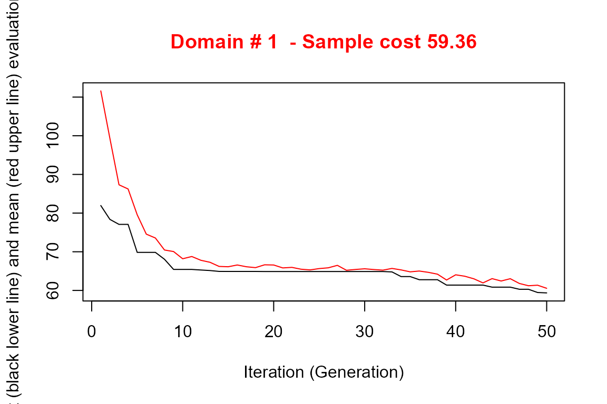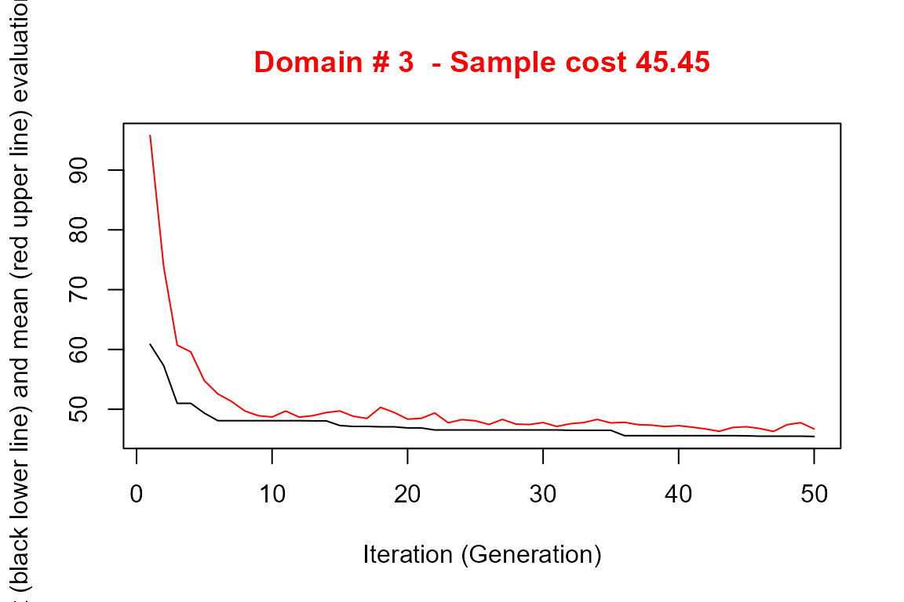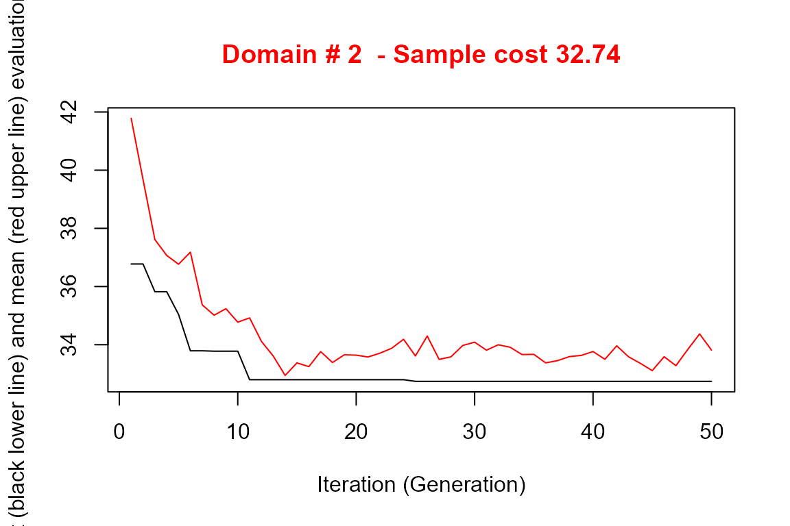
#>
#> *** Sample size : 70
#> *** Number of strata : 27
#> ---------------------------outstrata4 <- solution4$aggr_strata sum(outstrata4$SOLUZ) #> [1] 134.1063 expected_CV(outstrata4) #> cv(Y1) cv(Y2) #> DOM1 0.098 0.097 #> DOM2 0.098 0.096 #> DOM3 0.090 0.091
Once the optimized solution has been produced, we select the sample:
sample <- selectSample(frame=solution4$framenew, outstrata=solution4$aggr_strata) #> #> *** Sample has been drawn successfully *** #> 133 units have been selected from 30 strata #> #> ==> There have been 3 take-all strata #> from which have been selected 63 units
and we control that all take-all units are included in the sample:
sum(framecens$id %in% sample$ID) #> [1] 63
Appendix - Methodological approach
In a stratified sampling design with one or more stages, a sample is selected from a frame containing the units of the population of interest, stratified according to the values of one or more auxiliary variables (X) available for all units in the population.
For a given stratification, the overall size of the sample and the allocation in the different strata can be determined on the basis of constraints placed on the expected accuracy of the various estimates regarding the survey variables (Y).
If the target survey variables are more than one the optimization problem is said to be multivariate; otherwise it is univariate.
For a given stratification, in the univariate case the optimization of the allocation is in general based on the Neyman allocation. In the univariate case it is possible to make use of the Bethel algorithm.
The criteria according to which stratification is defined are crucial for the efficiency of the sample.
With the same precision constraints, the overall size of the sample required to satisfy them may be significantly affected by the particular stratification chosen for the population of interest.
Given G survey variables, their sampling variance is:
\[Var(\hat{Y_{g}})=\sum_{h=1}^{H}N_{h}^{2} (1- \frac{ n_{h}} {N_{h}}) \frac{ S_{h,g}^{2}} {n_{h}} \;\;\; g=1,...,G\]
If we introduce the following cost function:
\[C(n_{1},...,n_{H})=C_{0}+\sum_{h=1}^{H}C_{h}n_{h} \]
the optimization problem can be formalized in this way:
\[min= C_{0}+\sum_{h=1}^{H}C_{h}n_{h}\\ \] under the constraints \[ \begin{cases} CV(\hat{Y_{1}}) < U_{1}\\ CV(\hat{Y_{2}}) < U_{2}\\ ...\\ CV(\hat{Y_{G}}) < U_{G}\\ \end{cases} \] where \[ CV(\hat{Y_{g}}) = \frac{\sqrt{Var(\hat{Y_{g}})} } {mean(\hat{Y_{g}})}\]
Given a population frame with m auxiliary variables \(X_{1},..., X_{M}\) we define as atomic stratification the one that can be obtained considering the cartesian product of the definition domains of the m variables. \[L=\{(l_{1}),(l_{2}),...,(l_{k})\}\] Starting from the atomic stratification, it is possible to generate all the different stratifications that belong to the universe of stratifications. For example:
\[ \begin{align*} &P_{1}=\{(l_{1},l_{2},l_{3})\} & P_{2}=\{(l_{1}),(l_{2},l_{3})\} \\ &P_{2}=\{(l_{2}),(l_{1},l_{3})\} & P_{4}=\{(l_{31}),(l_{1},l_{2})\} \\ &P_{5}=\{(l_{1}),(l_{2}),(l_{k})\} \end{align*} \]
The number of feasible stratifications is exponential with respect to the number of initial atomic strata:
\[ \begin{align*} & B_{4}=15 & B_{10}=115975 & & B_{100}\approx 4.76 \times 10^{115} \end{align*} \]
In concrete cases, it is therefore impossible to examine all the different possible alternative stratifications.
The Genetic Algorithm allows to explore the universe of stratifications in a very efficient way in order to find the optimal (or close to optimal) solution.
Choosing the atomic method, the application of the genetic algorithm is based on the following steps:
- the atomic stratification is built by cross-classifying the units in the frame using all the values in the domains of definition of all the stratification variables X, and aggregating units that have the same combinations of values;
- all alternative stratifications are produced by aggregating atomic strata;
- a given stratification is considered as an individual in a population (= generation) subject to evolution;
- each individual is characterized by a genome represented by a vector of dimension equal to the number of atomic strata: the position of each element in the vector identifies an atomic stratum;
- each element in the vector is assigned a random value between 1 and K (maximum acceptable number of strata): the vector therefore indicates the way in which the individual atomic strata are aggregated together;
- for each individual (stratification) its fitness is calculated by solving the corresponding problem of optimal allocation by means of Bethel’s algorithm;
- in passing from one generation to the next, individuals with higher fitness are favored;
- at the end of the process of evolution, the individual with the overall best fitness represents the optimal solution.
Instead, choosing the continuous or the spatial method, steps are the following:
- all alternative stratifications are produced by randomly generating a number of cuts in the domains of definition of the continuous stratification variables X;
- a given stratification is considered as an individual in a population (= generation) subject to evolution;
- each individual is characterized by a genome represented by a vector of dimension equal to the number of cuts product the number of stratification variables X;
- for each individual (stratification) its fitness is calculated by solving the corresponding problem of optimal allocation by means of Bethel’s algorithm;
- in passing from one generation to the next, individuals with higher fitness are favored;
- at the end of the process of evolution, the individual with the overall best fitness represents the optimal solution.
References
Baillargeon, Sophie, and Louis-Paul Rivest. 2014. Stratification: Univariate Stratification of Survey Populations. https://CRAN.R-project.org/package=stratification.
Ballin, Marco, and Giulio Barcaroli. 2016. “Optimization of Stratified Sampling with the R Package SamplingStrata: Applications to Network Data.” Computational Network Analysis with R: Applications in Biology, Medicine and Chemistry.
Ballin, M., and G. Barcaroli. 2013. “Joint Determination of Optimal Stratification and Sample Allocation Using Genetic Algorithm.” Survey Methodology 39: 369–93.
Barcaroli, G. 2014. “SamplingStrata: An R Package for the Optimization of Stratified Sampling.” Journal of Statistical Software 61 (4): 1–24. https://www.jstatsoft.org/article/view/v061i04.
Bethel, J. 1989. “Sample Allocation in Multivariate Surveys.” Survey Methodology 15: 47–57.
Hartigan, J. A., and M. A. Wong. 1979. “A K-Means Clustering Algorithm.” Applied Statistics 28: 100–108.
O’Luing, M., S. Prestwich, and S. Armagan Tarim. 2019. “A Grouping Genetic Algorithm for Joint Stratification and Sample Allocation Designs.” Survey Methodology 45 (3): 513–31.
Willighagen, E. 2005. Genalg: R Based Genetic Algorithm. https://CRAN.R-project.org/package=genalg.